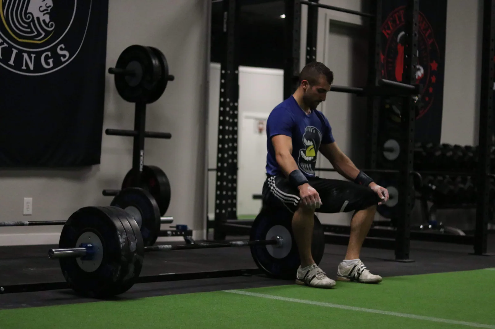
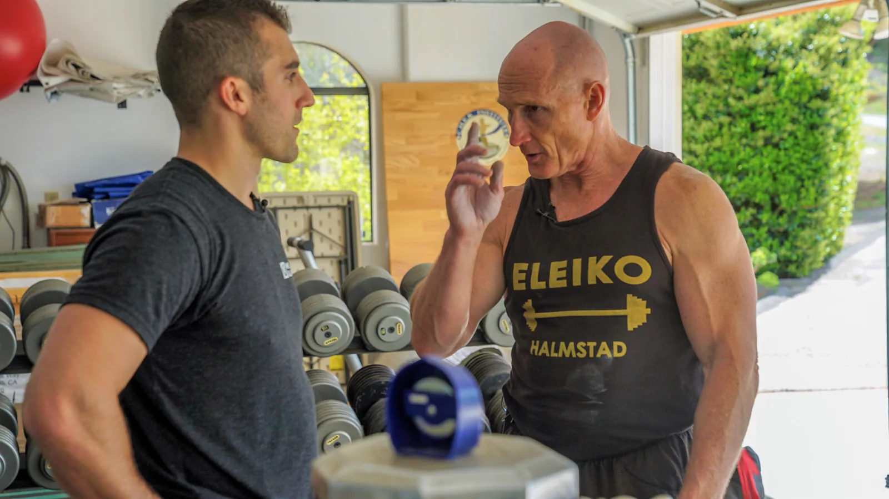
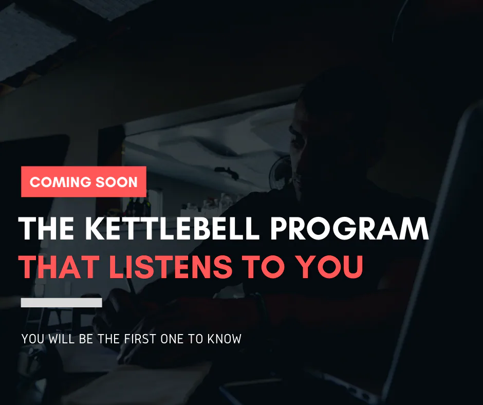

B94 · When to train, and when to back off - Part 2 of 2
Hi {first_name},
Happy 2020! I am thrilled about the New Year and I hope you are too! My main focus in 2020 is elevating how I serve and support your goals.
Last week we opened a discussion around how to begin tuning in to our inner awareness to help determine the day(s) ideal for harder training, and those more suitable for rest and recovery.
Since then, I’ve received a handful of messages from people who found the tips very helpful, and are now starting their morning with the three simple questions I shared. SO RAD!
So, overtraining...what is it exactly?
There are a few different definitions out there when it comes to overtraining, but the definition I’ll use here that I found clear, concise, and will touch on below comes from AceFitness:
Overtraining is: constant intense training that does not provide adequate time for recovery.

Physical signs of overtraining include:
Any of this sound familiar at one point in your life? Maybe right now?
Thinking back to one of the most valuable pieces of advice Holistic Health Expert and mentor, Paul Chek, shared with me during our coaching together was this - “if you can’t walk into the gym, and honestly exceed your last performance by 1-3%, then you don’t belong in there.” Simple, yet POWERFUL - especially when applied regularly.

These wise words he shared came from renowned Olympic Track Coach Charlie Francis. I’ve found this to be extremely valuable and is still one question I ask myself often to determine what type of training day it will be.
Many of the tools I use for how to become a more balanced athlete, coach, and individual came from lessons learned while working with Paul and the education received from the Chek Institute. For this, I am incredibly grateful.
In my opinion, the New Year is all about learning from the past, letting go of what no longer serves us, and creating new beginnings. If we take this and think about how awareness is a prerequisite for change, then the more mindful we are, the greater the propensity for positive change to occur and last.
Below are a series of questions to reflect deeper upon that can help guide your inner compass:
I’d encourage you to check-in with these questions regularly. The result after 1-2 weeks can be a BIG eye-opener.
If you start asking yourself any of the questions I’ve listed in Part I and/or Part II of this email, I trust that you’ll begin developing a deeper relationship with yourself, and a more intuitive approach to your fitness and performance training too!
If reflecting upon questions like this is completely new, I encourage you to remember to have fun with it and remain curious. Over time your intuitive muscles will grow stronger and stronger - just like the first time you picked up a barbell or kettlebell and started deadlifting or swinging ; )
Lastly, if you are feeling constantly exhausted and potentially overtrained, you have lots of options. Explore going for a daily easy walk, taking a restorative yoga class (Yin and Hatha are great for this), or simply taking more dedicated total rest days a week and doing something playful with friends or family.
I hope this helps guide you to develop a deeper connection with your body and determine when to train, and when to back off.
Wishing you a wonderful New Year full of great beginnings!
Best, Mike P.S.
 If you’re reading this, you’re more than likely aware of this fact - in a balanced training program, the physical component can only be but one aspect in the larger plan. Health and longevity require consideration of the entire person and customizing a plan of action that meets your needs at any given moment. That’s why in my next program, while it will be kettlebell workout focused, there is SO much more to it than that. I am calling it Kettlebell Lifestyle - the program that listens to you. In my next email, you’ll get an inside look at what it’s all about.
In the meantime, follow me on Instagram @Mike.Salemi for more regular tips on healthy living and high performance. |